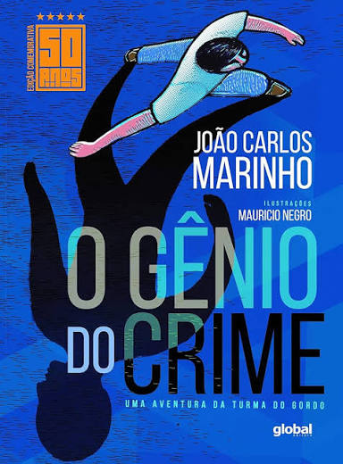

LITERATURA INFANTOJUVENIL
Comprar livro
O Gênio do Crime
De João Carlos Marinho
Uma aventura cheia de mistério, investigação e diversão! Acompanhe a Turma do Gordo na busca por uma quadrilha de falsificadores de figurinhas.
📖 Aventura
🔎 Mistério
⭐ Clássico
R$ 51,77

Sobre o livro
Escrito por João Carlos Marinho, O Gênio do Crime é uma obra de aventura policial infantojuvenil. A história acompanha um grupo de amigos que tenta solucionar um caso misterioso na São Paulo dos anos 1960.